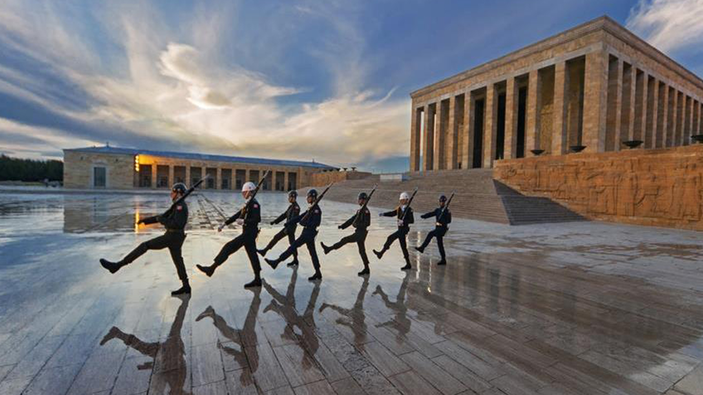
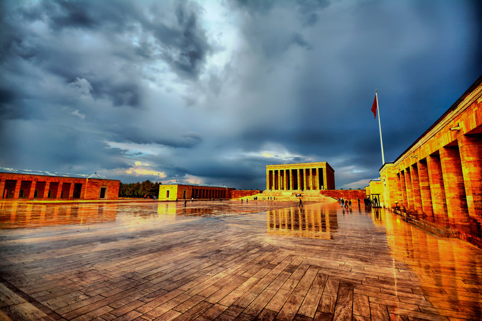
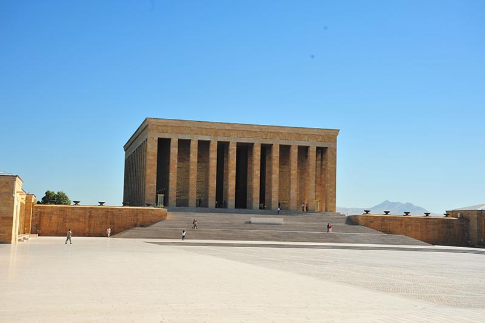

"Benim naçiz vücudum elbet bir gün toprak olacaktır, ancak Türkiye Cumhuriyeti ilelebet payidar kalacaktır."
SAYGI VE ÖZLEMLE
1881 - 193∞
- ANITKABİR -
When it comes to Ankara, of course, Anıtkabir is at the top of the places to visit.
The mausoleum, which is the eternal resting place of Gazi Mustafa Kemal, is an architectural structure worthy of the great commander's glory and personality.Although it is located in several different sections, almost all of the must-see ,places are within the Monument Block. Anıtkabir, located in Tandoğan in Çankaya district, is located in the center of the city, so transportation is possible with many vehicles.
There is also Atatürk and the War of Independence Museum in Anıtkabir.
The museum, which is established on an area of approximately 3 thousand square meters, opens the door to a different atmosphere for its visitors with its different and
In the first section of the museum, which consists of 4 sections, private belongings of Gazi Mustafa Kemal,paintings of Çanakkale and the War of Independence in the second section, detailed information about the National Struggle and the revolutions in the third section, and books belonging to Mustafa Kemal Atatürk's private library in the fourth section .
The museum, located on the ground floor of the Hall of Honor, where the mausoleum is located, is a must-visit place for every Turkish citizen.
You can reach Anıtkabir by Ankaray and city buses.
Entrance to Anıtkabir, one of the most magnificent buildings of our country, is free.
Click to view Anıtkabir on the map.


